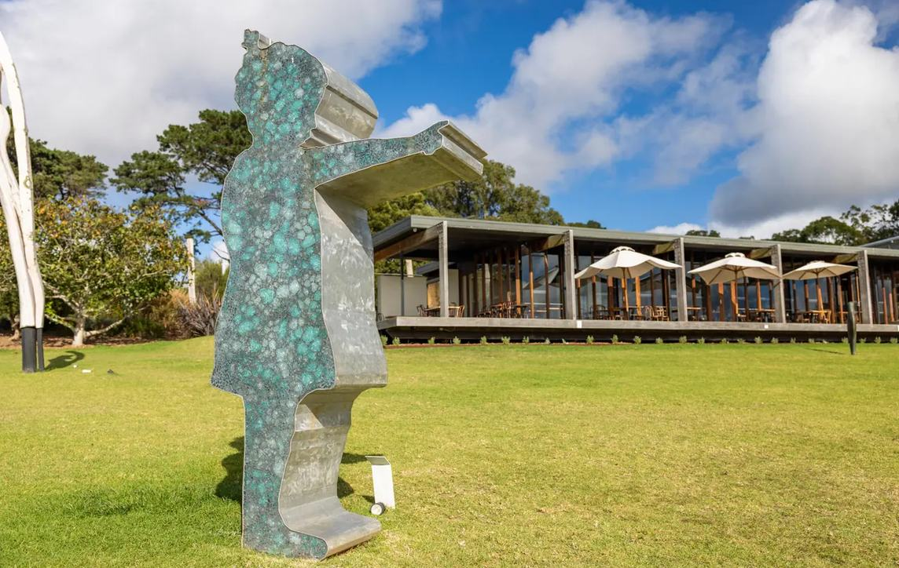

Peninsula Insider
Two nights,
well spent.
Reserve the nights and the tables before shaping the drive.

Photo · Two Palms Australia, courtesy of Visit Victoria
Montalto Vineyard & Olive Grove, Red Hill, Mornington Peninsula.
Explore this week’s planpeninsulainsider.com.au